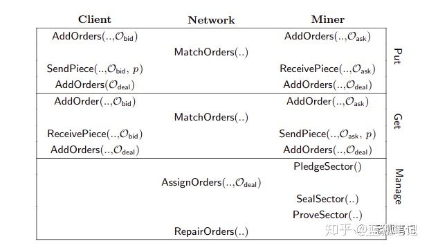
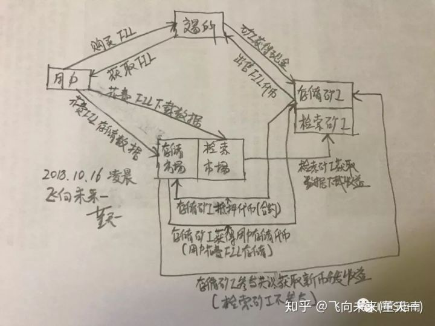
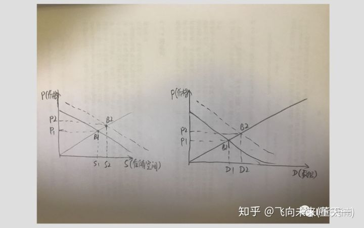

[TOC]
Filecoin的终极指南：深挖Filecoin白皮书
https://zhuanlan.zhihu.com/p/87632601
Filecoin网络如何运作？
- 在Filecoin中有3组用户：客户、存储矿工以及检索矿工。
- 什么是客户、存储矿工以及检索矿工？
- 什么是碎片？
- What's 扇区？
- What's 分配表？
- 什么是订单
- 什么是订单簿？
- 什么是保证？
-
存储市场的买盘、卖盘如何运作的？
- Manage.PledgeSector
- Put.AddOrders
- Put.MatchOrders
- Put.ReceivePiece
- Manage.AssignOrders
- Manage.SealSector
- Manage.ProveSector
- Manage.RepairOrders
-
检索市场的买盘、卖盘如何运作的？
- Get.AddOrders
- Get.MatchOrders
- Put.SendPiece
下图显示发生在网络上的所有活动

对Filecoin协议的深入研究
- 什么是DSN?
- DSN安全操作协调协议有哪些？
- DSN对两种错误进行容错：管理容错、存储容错。什么是管理容错？什么是存储容错？
- 以往的共识算法有哪些弊端？
- Filecoin的共识算法是什么？什么是PoST（Proof-of-Spacetime）？
其他一些问题
Filecoin协议改进的可能性
Filecoin: 矿工是怎么赚取FIL的
-
Filecoin系统的参与者有哪些？

-
Filecoin的挖矿与BTC有什么不同？
- 存储矿工收益来自哪3个方面？
- 检索矿工收益来自哪个方面？
